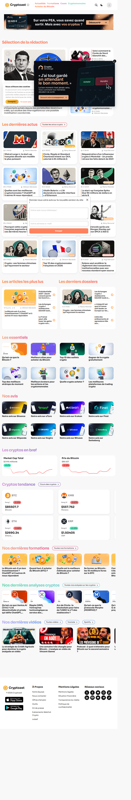
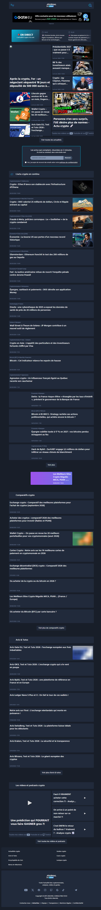

Cadre et limites
competitive-analysis.md (Analyse). Les pastilles sont cliquables et mènent à l'index des preuves.
Contenu informatif. KaayNioujangat explique le marché ; il ne donne ni conseil en investissement, ni promesse de gains, ni incitation à acheter. Cette règle s'applique à toutes les publications ci-dessous.
1. Énoncé de positionnement
Un seul énoncé, construit sur le premier vide laissé par les deux concurrents : aucun ne s'adresse au Sénégal.
Pour les débutants au Sénégal qui veulent comprendre le marché crypto sans jargon,
KaayNioujangat est le résumé quotidien en français simple
qui explique l'essentiel en quelques lignes, avec des repères en FCFA et un ton sans pression commerciale.
Contrairement à Cryptoast et Journal du Coin, rédigés pour un lecteur France/Europe (€, MiCA, PSAN, PEA) et ouvrant sur une offre sponsorisée,
nous parlons d'abord à un lecteur d'ici, et nous disons ce que nous ne savons pas.
Phrase d'accroche (hypothèse à tester)
« Le marché crypto du jour, en clair, pour les débutants au Sénégal. »
Reprend la consigne de l'analyse : écrire « pour les débutants au Sénégal » dans le haut de page (Analyse §6, reco 2).
Pourquoi ce terrain est libre
- Aucune mention du Sénégal, du FCFA ou du Mobile Money sur les pages relevées (U1 U2 U3 U4 U5).
- Les deux promettent déjà un récapitulatif quotidien, mais en bloc secondaire : « récapitulatif de l'actualité crypto chaque jour » (U2), « résumées en 2 minutes » (U4). Le différenciateur n'est donc pas « le résumé » mais « le résumé d'ici, mis en avant ».




2. Trois piliers de marque
Chaque pilier répond à un constat de l'analyse et se traduit par un engagement vérifiable.
1. Clair et court
Engagement : une réponse d'un écran d'abord, le détail ensuite. Chaque mot technique est expliqué en une phrase.
Constat : pilier Cryptoast d'environ 11 800 mots sur le Bitcoin (U2) ; pages d'accueil denses avec plusieurs fenêtres superposées (S1, S3). Les réponses courtes ne sont pas le schéma dominant (Analyse §4, écart 3).
2. Ancré ici
Engagement : repères en FCFA à côté des € et $, exemples locaux quand ils sont pertinents (Wave, Orange Money), et vérification locale avant tout guide pratique.
Constat : contenus cadrés Europe : MiCA, PSAN, PEA, exchanges pour utilisateurs UE (U1, U4, U5, S3). Utilité de ces contenus au Sénégal : non observée (Analyse §4, écart 2).
3. Honnête et indépendant
Engagement : pas de conseil d'achat, pas de promesse de gains, publicité étiquetée, politique d'indépendance publiée, date de mise à jour visible, limites assumées.
Constat : les deux ouvrent sur une offre sponsorisée ou d'affiliation (U1, U4) ; un guide Journal du Coin porte la date du 29 février 2024 (U5). Le libellé « Publicité » existe déjà chez eux : c'est la norme minimale à dépasser.
3. Calendrier de contenu sur 4 semaines
LinkedIn (3 publications par semaine, rythme de travail réaliste pour une petite équipe) et chaîne WhatsApp (le résumé quotidien est le produit lui-même ; s'y ajoutent un message épinglé ou un sondage par semaine). Un créneau par semaine reste libre pour réagir à l'actualité.
| Semaine | Chaîne WhatsApp | Preuve | |
|---|---|---|---|
| Sem. 1 Se présenter, prouver l'utilité |
|
|
U2 Analyse §6 reco 1, 3, 4 |
| Sem. 2 Repères en FCFA |
|
|
Analyse §1 et §2 « West-African audience » S1 |
| Sem. 3 Comprendre sans jargon |
|
|
U4 (Lexique) U1 (Les essentiels) S1 |
| Sem. 4 Transparence et communauté |
|
|
U1 U4 U5 Analyse §6 reco 4 |
4. Sept améliorations de la page d'accueil
Une page légère, en une colonne, pensée pour le mobile et pour une seule action.
-
Un vrai titre H1 qui dit à qui et quoi
Ex. : « Le résumé crypto du jour, en français simple, pour les débutants au Sénégal. »
Aucune des deux pages d'accueil n'a d'élément H1 (Analyse §5) ; leur promesse est dans le titre de page et la meta description seulement (U1, U4).
-
Une seule action au-dessus de la ligne de flottaison : « Recevoir le résumé du jour »
Pas de second bouton concurrent.
Chez eux, le récapitulatif est un bloc secondaire en fin de page (U2) ou en milieu de page (U4), et les actions principales sont commerciales : « Bilan Crypto Offert » (U1), bannière Gate EU (S3).
-
Choix du canal de réception (WhatsApp ou e-mail) avec consentement clair
Une case de consentement explicite, comme le fait Journal du Coin ; WhatsApp proposé en test.
Le formulaire Journal du Coin comporte une case de consentement (U4, S3). WhatsApp : hypothèse de l'analyse (Analyse §6 reco 1).
-
Un exemple réel de résumé du jour, visible sans s'inscrire, avec lien vers un mini-glossaire
Le visiteur voit ce qu'il va recevoir : quelques lignes, un mot expliqué.
Les concurrents offrent beaucoup de contenu mais peu de réponses courtes (Analyse §4, écart 3) ; ils proposent leur parcours débutant sous forme de menus : « Les essentiels » (U1, S1), « Lexique crypto » (U4).
-
Repères en FCFA à côté des € et $, avec source et heure du taux
Un bloc « Le marché en bref » où chaque valeur apparaît aussi en FCFA. Mentionner Wave ou Orange Money seulement quand c'est pertinent, jamais comme moyen d'achat sans vérification.
Les blocs de prix de Cryptoast (« Cryptos en bref », « Cryptos tendance », S1) et ses exemples sont en € et $ (Analyse §1) ; aucun FCFA relevé (Analyse §4, écart 1).
-
Zéro fenêtre superposée, page légère, bandeau de cookies avec option « essentiels uniquement »
Pas de pop-up, pas de formulaire d'avis qui s'ouvre seul. Mesurer le poids de la page sur mobile avant et après la mise en ligne.
Trois fenêtres sur la capture Cryptoast : bandeau de cookies, bandeau glissant Crypto Stratège, formulaire « Donnez-nous votre avis » (S1). Le bandeau ne propose que « Compris ! », sans option essentielle (Analyse §1 « Cookies »). Le poids des pages concurrentes est non observé.
-
Un bloc « Indépendance, publicité et limites », plus une date de mise à jour sur chaque explication
Qui finance le site, ce qui est étiqueté « Publicité », ce que nous ne faisons pas (conseil, promesse de gains), date de dernière vérification.
Chez eux : offre sponsorisée en premier écran (U1, U4, S1, S3) ; un guide daté du 29 février 2024 (U5, S4).
5. Cinq idées d'acquisition que les concurrents n'utilisent pas
« N'utilisent pas » signifie : non observé sur les pages visitées (2 pages par site, sans connexion). Ce sont des hypothèses à tester, pas des résultats.
-
La chaîne WhatsApp comme canal principal de distribution
Le résumé arrive là où le lecteur est déjà, sans application à installer ni e-mail à ouvrir ; LinkedIn et le site servent à mener vers la chaîne.
Journal du Coin affiche YouTube, X, Telegram et TikTok (U4), Cryptoast des applications mobiles (U1) ; WhatsApp n'apparaît pas dans ce qui a été observé (Analyse §6 reco 1). Usage de WhatsApp par le lectorat cible : non observé.
-
La carte « Prix du jour en FCFA », faite pour être transférée
Une image simple par jour : valeur, variation, taux de conversion, source, heure. Sans prévision.
Les prix sont en € et $ chez les deux (Analyse §1, §2, §4 écart 1, S1). Une carte lisible et sourcée est un contenu que seul un acteur local a intérêt à produire.
-
Un parcours débutant livré par messages courts, pas par menu
Une réponse d'un écran par message sur la chaîne (« C'est quoi un portefeuille ? »), qui renvoie vers le glossaire. Le lecteur avance sans chercher.
Leurs parcours débutants sont des rubriques à explorer : « Les essentiels » (U1), « Lexique crypto » et « Encyclopédie du Coin » (U4), à côté d'un pilier de 11 800 mots (U2).
-
Le bouche-à-oreille sans récompense financière : « Transférez à quelqu'un qui débute »
Un lien d'invitation direct, un message prêt à transférer, aucun bonus en crypto ni en argent.
Leurs incitations sont des récompenses d'exchange : « 60 € offerts en BTC » (U2), « jusqu'à 520 USDC » (U4, S3). Se distinguer par l'absence de récompense financière va avec le pilier « Honnête et indépendant ».
-
Une fiche « Vérifié pour le Sénégal », datée, avant tout guide pratique
Avant de parler d'achat ou de plateformes, une page qui dit ce qui a été vérifié localement, ce qui ne l'a pas été, et à quelle date. Elle devient aussi un contenu à partager sur LinkedIn.
Leurs contenus pratiques sont cadrés Europe (MiCA, PSAN, PEA, « Gate EU ») et ne disent pas ce qui vaut au Sénégal (U1, U4, U5) ; la date de 2024 sur un guide (U5). Le cadre légal sénégalais est non observé ici : à vérifier avec une source qualifiée avant publication, sans rien supposer à partir des concurrents (Analyse §6 reco 4).
6. Trois gains rapides pour cette semaine
Réalisables sans développement lourd ni budget publicitaire.
1. Réécrire le haut de page
Un H1 « pour les débutants au Sénégal » et un seul bouton « Recevoir le résumé du jour ». Retirer tout autre appel à l'action au premier écran.
2. Ouvrir la chaîne WhatsApp et publier trois résumés
Créer la chaîne, épingler le message d'accueil (règle « informatif, pas un conseil »), publier les trois premiers résumés pour que le lien d'invitation mène à une chaîne déjà vivante. À présenter comme un test.
3. Publier la page « Indépendance et limites »
Quelques lignes : financement, publicité étiquetée, pas de conseil ni de promesse de gains, date de dernière mise à jour. À lier depuis le pied de page et le message épinglé.
Suivi, sans objectifs chiffrés
L'analyse n'a aucune donnée de départ (trafic, taille des audiences : non observé). Fixer des cibles n'aurait donc aucun fondement ; il faut d'abord mesurer.
- Chaîne WhatsApp : nombre d'abonnés, réactions et réponses aux sondages par semaine.
- Page d'accueil : part des visiteurs qui cliquent sur le bouton unique ; poids de la page sur mobile, mesuré avant et après.
- LinkedIn : clics vers la chaîne, enregistrements et partages par publication.
- Partage : nombre d'entrées via le lien « Transférez à quelqu'un qui débute » (lien distinct pour le suivre).
Fixer des cibles après deux à quatre semaines de mesure, puis relire ce plan. Pour obtenir des références de marché, il faut autoriser SimilarWeb ou Ahrefs dans les connecteurs du plugin.
Index des preuves
Source : competitive-analysis.md, observation du 6 octobre 2026, navigateur Playwright, pages publiques, sans connexion ni formulaire envoyé, aucun consentement aux cookies donné.
| ID | Type | Référence |
|---|---|---|
| Analyse | Document | competitive-analysis.md : §1 Cryptoast, §2 Journal du Coin, §3 forces, §4 écarts, §5 motifs communs, §6 recommandations, « Method and limits ». |
| S1 | Capture (PNG) | screenshots/cryptoast-home-fullpage.png – accueil Cryptoast. Ouvrir |
| S2 | Capture (JPEG) | screenshots/cryptoast-educational-bitcoin-fullpage.jpeg – page /bitcoin/ ; non intégrée (JPEG d'environ 9 Mo, page de 51 150 px de haut) ; le détail a été lu dans le texte de la page, cité via U2. |
| S3 | Capture (PNG) | screenshots/journalducoin-home-fullpage.png – accueil Journal du Coin. Ouvrir |
| S4 | Capture (JPEG) | screenshots/journalducoin-educational-cryptomonnaie-fullpage.jpeg – guide « cryptomonnaie » ; non intégrée (JPEG), citée via U5. |
| U1 | URL | https://cryptoast.fr/ (en ligne) |
| U2 | URL | https://cryptoast.fr/bitcoin/ (en ligne) – pilier d'environ 11 800 mots. |
| U3 | URL | https://cryptoast.fr/formation/ (en ligne) – visitée pour les prix uniquement ; aucun prix trouvé. |
| U4 | URL | https://journalducoin.com/ (en ligne) |
| U5 | URL | https://journalducoin.com/guides/cryptomonnaie/ (en ligne) – environ 4 500 mots, daté du 29 février 2024. |
| U6 | URL | https://journalducoin.com/bitcoin/ (en ligne) – page d'actualités, écartée comme page éducative ; non utilisée dans ce plan. |